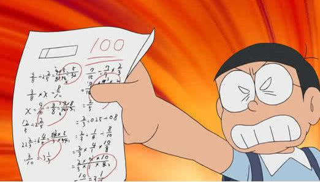

O!M!G!他在考前做了那「4件事」
考試成績進步，令同學稱羨：「他作弊八?」
記者：奶蓋大人
某不知銘濔填貢同學來揭曉各位同學都在乎的考試加強秘笈
雖然看了也不一定會考得比較好，但有總是比沒有好
第一，上課要專心聽課，無論如何，沒聽的話自己複習也不可能懂
第二，功課要寫，妳以為是複習嗎，no no，你會來看這篇報導就代表你應該根本沒複習的心
第三，抄筆記，都沒做筆記了至少抄一下班上認真地才有記憶，
你說為啥不抄學霸的，因為有很高機率你看不懂
最後，求神拜佛，畢竟連學霸也要求不要考出他不會的題目，那我求出個我都猜對的題目也不錯啊
總而言之，言而總之，意思就是一言以蔽之
認真讀書不是一篇報導就能總結的，多看多聽多學，少看些亂七八糟的(像這篇報導)
----------------------給擬議點小小的版權震撼------------------------